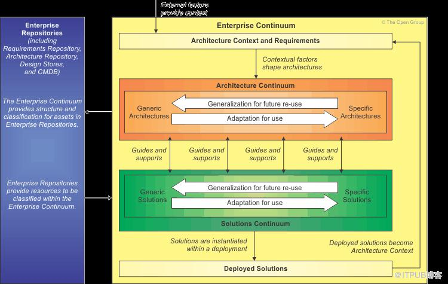

插件化架构
为什么要实现插件化架构
业务和平台要解耦。业务和平台都是多对多的关系。全链路里既有业务，也有平台。大家应该如何 talk by interface。我们看待复杂组织的业务流程，要线性看，看到很多节点；也要分层看，看到复合的层次。在这种情况下，上层架构域和下层架构域之间怎么实现复杂度的管理？
如果我们需要构建大规模的泛交易平台，我们需要靠插件化架构把我们的系统组装起来。
插件化架构通常需要一个 runtime 层（或者 boot 层）、core 层。
从业务视角来看，要解决多团队协同的问题
因为多个业务域/团队没有把能力用统一的方式透出，所以没有人能够知道统一的技术能力应该怎么串联。进行全链路沟通需要大量的沟通对齐工作。
从业务视角来看，复杂性业务要素包含本业务用例里的各种模型。
从平台视角来看，要解决复杂性管理问题
平台要支撑多种业务，业务的复杂性、差异性，以及众多业务需求不确定性，在各平台内部如何管理和支撑？简单的 if-else 不易于管理，确保对业务的支撑能力不相互影响。隔离是最好的管理手法。
从平台视角来看，复杂性业务要素包含本域内标准系统用例里的各种模型。
同一个模型，在业务场景里看到的是具体的模型-如外卖；而在平台层想到的是商品。业务层看到的是外卖的成交、制作、配送，而平台层看到的是商品的上单、供给、交易、退款、履约。
如何实现插件化架构
通过插件化技术架构，使业务与平台隔离，解决业务差异性和不确定性。让业务可以扩展平台能力-通过回调来实现架构上的反向依赖，但主流程大部分时候是跑在平台里的。
我的额外总结：
- 平台首先定义领域：领域活动、领域服务、领域能力（商业能力），平台实现一部分领域能力（通过扩展点实现）。
- 平台把领域包装成商业能力、平台产品。
- 业务拥有自己的业务流程（有自己的 bizActivity、和 bizService），使用平台产品，实现业务扩展领域能力（既是最顶层用户，也是底层能力提供方之一）。业务只理解商业 sdk，只理解商业能力。
具体原则
- 平台提供经过业务抽象的、标准化业务能力；同时提供可扩展的扩展点（extension 或者 slot），开放给业务进行个性化定制。
- 业务基于可扩展扩展点，进行业务个性化定制开发，实现自己的业务。
- 平台与业务是共建、共享、反哺的关系。平台深入到业务，抽象建模出通用的标准业务能力，同时设计供业务进行个性定制的扩展点。
通过 sdk 进行通信和解耦
统一业务语言和概念，把控业务全貌。
- 从各平台提供的平台产品/商业能力视角出发，构建全平台统一SDK，分门别类设计能力扩展点，统一透出给业务方进行个性化定制，提供缺省的扩展点封装实现。
- 统一业务身份，一个业务扩展包、一个业务身份贯穿所有业务平台。
- 构建业务运营支撑发布平台，业务可视、可管、可运营。
- 通过业务能力SDK + 运营支撑发布平台，把商业能力、需求结构化和服务代码建立映射，做到需求即PRD-> PRD即代码 -> 代码即部署 -> 部署即监控。

常见的业务子域：订单、支付、结算、营销、价格、库存、商品、售后。
- 什么是业务：拥有 bizIdentity，也叫垂直业务，每个业务都有自己独立的 bizCode。
- 什么是产品：提前准备好的、跨多个域、横向提供给多业务方使用的可复用的组件，所以产品也可以认为是 平台能力。本质上就是对平台中已有扩展点（可以是多个域、多个能力）的定制的一个集合。这里的产品应该特指的是终态的平台产品-对应业务用例和系统用例。
- 业务与产品的区别：业务之间是互斥的，一个商品固定场景只能属于一个业务。但是一个商品固定场景可以属于（或者说使用了）多个产品，如： 聚划算+分期购+货到付款。 简单说产品就是为了给大家复用的系统能力。
- 业务身份：某一具体业务在系统流程的身份象征。通过业务身份，系统流程能唯一识别出该业务，执行业务对应的扩展点定制逻辑，以及产出运行态业务数据（gmv、订单量等）。
- 冲突：本质上来讲产品和业务都是对扩展点的定制，业务和产品、或产品和产品之间会存在对同一个扩展点定制的场景这时候就产生了冲突，冲突分两种情况：
a. 所有业务和产品定制点都执行。这种情况理论上不需要解决冲突的，因为业务和产品之间本身的代码需要做到相互隔离，不应该相互依赖。
b. 只选择第一个定制点的返回结果。这个时候就需要为多个定制点调整优先级。 - 业务流程：描述一个业务生命周期，由业务活动编排而成（此处可以引入编排框架）。比如保险批改流程，报价->创建批单 -> 核价 -> 核保 -> 支付 -> 出单。
- 业务活动：由特定角色触发的一段业务语义完整的业务功能，对应我们平时说的业务用例，比如用户下单、用户支付、商家发货等。业务活动的执行流，由域服务节点编排而成。
- 域：类似DDD中的业务子域，一个域包含一到多个域服务，一到多个域能力。比如阿里的buy2，全交易链路上有多少个业务子域，我们就需要建立多少个这样的设计：
1 | |
- 域服务：功能域对外提供的可供业务活动编排的服务接口，比如拆单接口、生单接口、库存扣减接口、风控接口等。
1 | |
- 域能力：功能域对外能提供的可扩展能⼒，是一组扩展点的组合，用于更好的组织系统。可以被看作调用一组特定扩展点的模板方法集合-从另一个视角来看，如果没有模板方法的结构，这也可以是一个双层的策略，通过扩展点动态绑定的策略。举例:
- 减库策略策略能力（扩展点举例： 库存策略、是否回补、是否强减付减、预扣超时时间 等）
- 普通收货方式策略能力（扩展点举例：是否使用UIC地址、是否过滤赠品、默认选中收货地址、是否展示地址 等）
- 淘金币策略能力（扩展点举例：可用淘金币数量、是否使用淘金币、是否要禁用淘金币 等）
- 买家评价策略能力（扩展点举例：是否允许卖家评价、直营评价计分类型、是否允许买家评价）
1 | |
- 能力实例：继承自域能力，是域能力的扩展和增强。
- 扩展点：对整个流程中需要被不同的业务定制的一个功能点。
a. 库存策略选择（拍减、预扣、付减）、是否回补库存、是否调用优惠
b. 是否支持货到付款、是否支持分期购、是否默认选中匿名购买、是否强制匿名购买。
1 | |
核心服务层（core 层）
交易框架核心域绝对抽象，是交易核心领域层的抽象定义。它定义了交易规范，交易做了什么、应该怎么做、哪些是可以扩展的。
主要按领域进行建模和划分，定义了领域服务接口、领域模型、领域能力模型以及可扩展点。基础域输出的是基于对电商业务的理解，制定的交易模型标准。
-
域服务描述每个子域应该做什么，如拆单、创建订单、创建支付单等
-
能力描述每个子域应该包含什么，如下单风控能力、库存扣减能力、优惠校验能力的
-
扩展点描述每个子域的行为是什么，是否支持分级库存扣减、是否支持、库存扣减策略（分级扣减、普通扣减）等
-
Repo描述下游服务依赖是什么，比如潘多拉、商品中心、库存中心等
解决方案层（biz-service-impl 层）
对核心服务层定义的域、域服务、能力、repo的具体实现，是对交易规范的实际实现和解释。核心领域层定规范、解决方案层负责在特定场景下解释实现。
-
开放SDK：业务方在业务定制时可以使用的SDK，允许业务方在SDK规定的范围内做业务扩展和定制。里边是一堆分门别类组织好的扩展点
-
业务活动：由域服务接口编排成一个个执行流程（如下单、支付、发货、收货等），只能通过域服务接口进行编排，不允许硬编码业务逻辑，后续通过运营平台配置
-
业务流程：由业务活动编排成一个个业务流程（如团购交付流程、预订交付流程、货到付款交付流程等），只能通过业务活动进行编排，不允许硬编码业务逻辑，后续通过运营平台配置
-
能力实例：对Ability进行具体实现。
-
扩展点实现：提供一份默认的扩展点实现。如是否支持折扣优惠的扩展点，默认实现为false，只有需要折扣优惠的业务方才定制该扩展点返回true
1 | |
TMF（Trade Modularized Framework）
同理还有 BPF。



COLA
todo